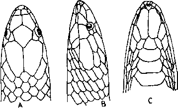

|
Digitized Inventory of Animal Resources: Reptilia ( Snakes ) Principal Investigator: Dr. R. J. B Alfred, Co-Investigator: Dr. Rama Krishna, Contributed by:
Dr. R.C.Sharma |
Xylophis perroteti (Dum. & Bibr. 1854)
Taxonomic
Details
----- Scientific Name
----- Classification
----- Synonyms
----- Common Names
Other
Biological Details
----- Habit and
Habitat
----- Distribution
---------- Extent of
Occurrence
---------- Area of occurrence
---------- Altitude
---------- Population
-----
Conservation Status
-----
Diagnostic
Features
-----
Breeding system
Miscellaneous
Information
Literature
Genus . Xylophis Beddome 1878
Maxillary teeth small, 28 to 30, those in the middle a little larger than the others. Body cylindrical. Head not distinct from the neck. Eye with rounded or vertically subellapitic pupil. Loreal is elongate, almost touching the eye. No preocular, Postocular 1. Anterior temporal one, elongate, Supralabials 5, the 3rd and 4th touching the eye. Anterior sublingual very large, in contact with the mental, the first three infralabials being very small. Scales smooth, without apical pits, in 13 or 15 rows throughout. Ventrals rounded, Tail short; subcaudals paired, Anal 1.
Two species are known.
Xylophis perroteti (Dum. & Bibr. 1854)
Family :
Classification: Genus .
Synonyms:
Common Names:
Distribution:
Altitude:
Conservation status: Rare Snake
Length : The maximum length reaches up to 550., tail 70 mm., in males and 620 mm., tail 40 mm., in females.
Body : Hemipenis forked for 3/4 its length, it is flounced throughout, the folds on the distal part are oblique, gradually changing until at the fork they are transverse; proximal to the bifurcation there are smooth longitudinal folds; there are no spines.
Scales : Body scales in 13 rows; ventrals 139-147; subcaudals: Male 27-38; Female 16-20.
Colouration : The dorsal colour is light or dark-brown, with small darker spots longitudinally arranged or united to form stripes. Certain individuals are with an ill-defined yellow collar. Lower parts are dirty yellowish, spotted with black, or almost entirely black.
Breeding Biology :

Xylophis perroteti (Dumeril
& Bibron) : Head : A. Dorsal view B. Lateral view C. Ventral view